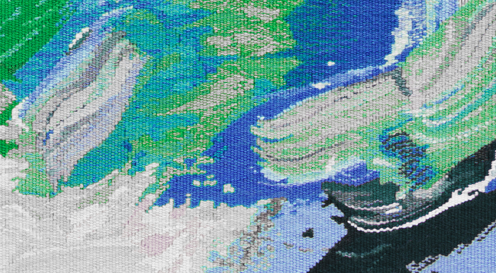
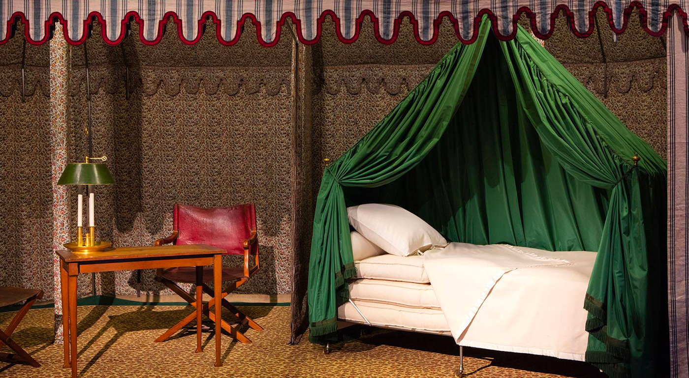
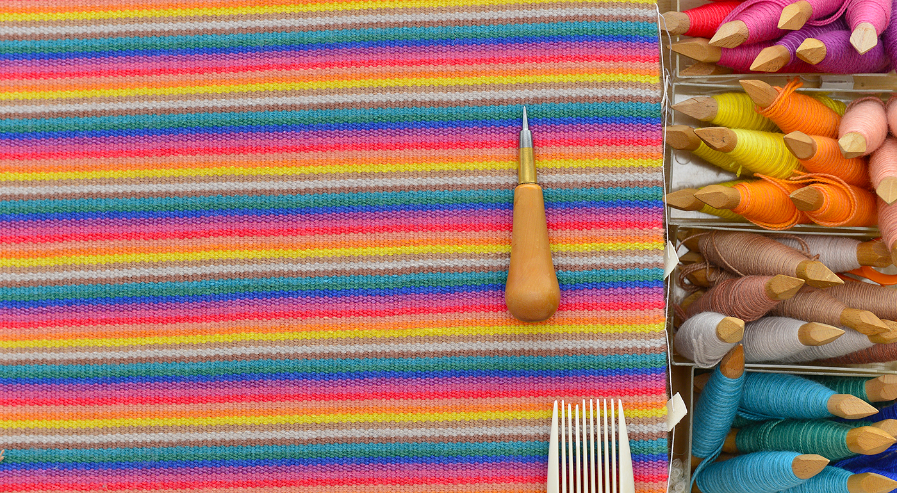
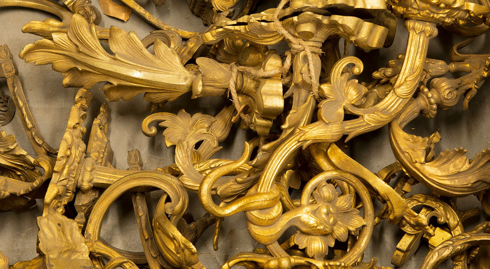
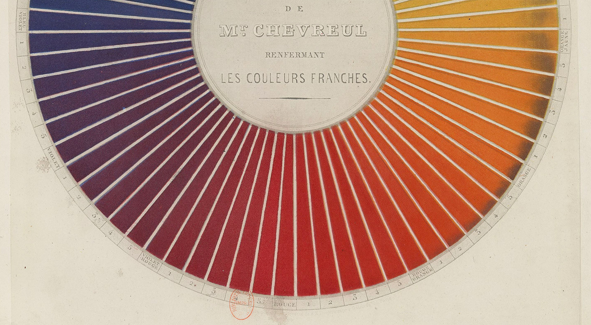

Dans quelques mois, le Mobilier national
Manufactures nationales des Gobelins, Beauvais et Savonnerie
exposera ses objets
mobiliers, tapisseries, tapis, œuvres d’arts… et savoir-faire
techniques, outils, matières utilisées, étapes de restauration… sur
une nouvelle interface.
Pour être informé de son lancement :
Et en attendant, choisissez les objets,
savoir-faire, ateliers… que vous aimeriez découvrir en répondant à ce Questionnaire


Le bivouac de Napoléon

Outils pour le tissage

Étape de restauration

Cercle chromatique de Chevreul